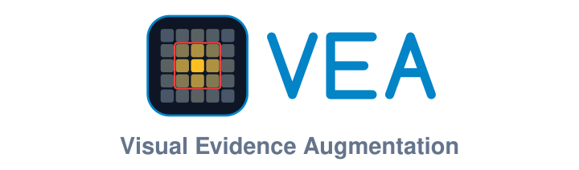
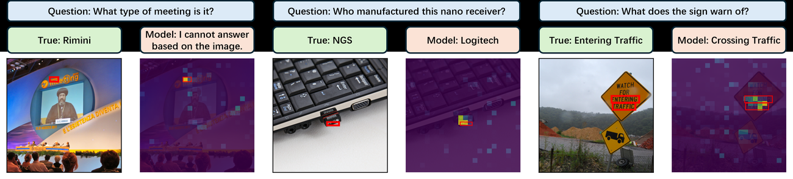
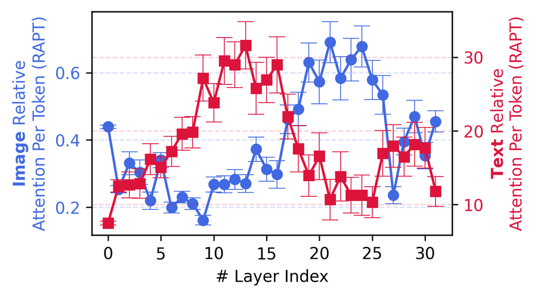
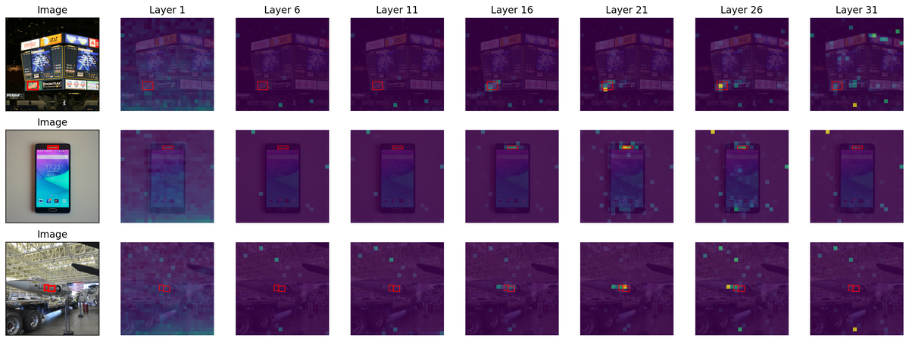
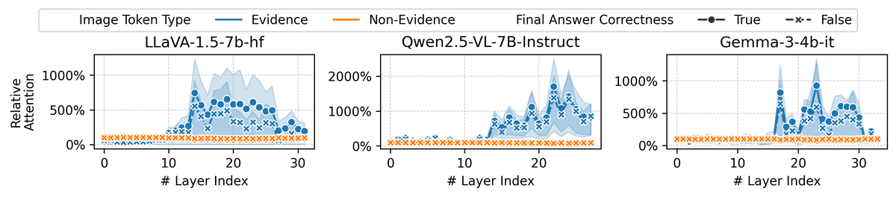
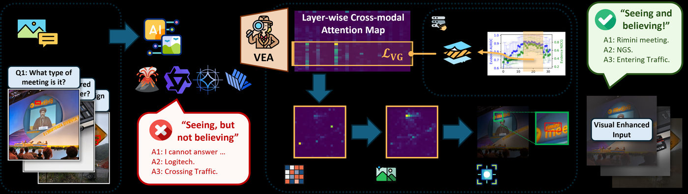
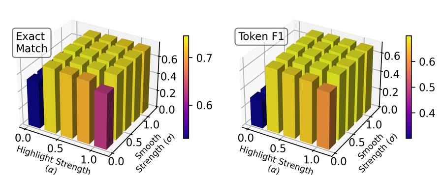
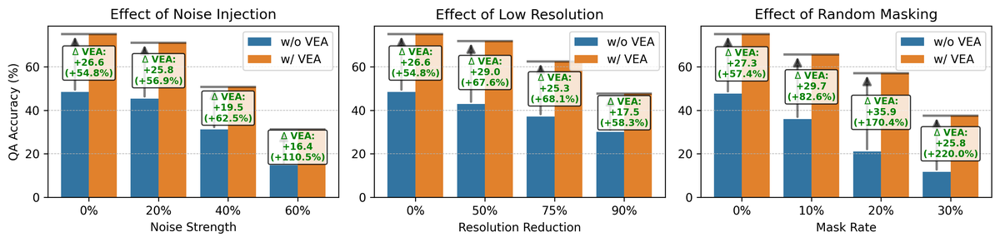

Probing the Disconnect Between Visual Attention and Answer Correctness in Vision-Language Models
1University of Illinois Urbana-Champaign · 2Amazon · 3Penn State University
TL;DR — When a VLM answers a visual question wrongly, it usually did look at the right part of the image. Its deep layers attend to the annotated evidence almost as sharply on questions it gets wrong as on ones it gets right. Vea exploits this: one forward pass reveals where those layers look, the image is re-shown with everything else dimmed, and accuracy rises by +5.7 Exact Match on average (up to +11.1) across 8 VLMs — with no training, no fine-tuning, and no weight access.
The intuitive explanation for a wrong answer is a perception failure — the model never saw the evidence. That turns out to be the wrong diagnosis.

The evidence is located, then discarded downstream. Three observations make this precise.



So the bottleneck is not perception, it is utilisation. The signal is already inside the model; it just fails to reach the answer.
If the model has already found the evidence, the cheapest intervention is to make that evidence impossible to ignore — by surfacing the model's own attention back into its input.

Eq. 1Average those layers' attention over the image
tokens to obtain one evidence score per patch. Needs a single-token forward pass — no
generation.Eq. 2A patch exceeding every neighbour by more than
λ=10 is an encoder artifact, not evidence; replace it with its local mean. Real evidence forms
coherent clusters.Eq. 3Gaussian blur with σ=0.5 of the shorter image
side, removing the blocky patch borders that would otherwise read as an unnatural mosaic.Eq. 4Scale each pixel's brightness by
α + (1−α)·evidence, with α=0.5. Evidence keeps its original
appearance; everything else dims.No gradients, no captioning pass, no second generation. The augmented image and a one-sentence prompt addition are the entire intervention.
| Method | LLaVA-NeXT 7B | 13B | Qwen2.5-VL 7B | 32B | Gemma3 4B | 27B | InternVL3.5 8B | 14B | Avg. Rank ↓ |
|---|---|---|---|---|---|---|---|---|---|
| Base | 38.5 | 49.4 | 73.4 | 69.3 | 56.6 | 69.3 | 79.3 | 79.3 | 5.38 |
| Inst | 38.8 | 50.2 | 73.9 | 69.0 | 56.0 | 70.2 | 79.2 | 78.8 | 5.47 |
| CGR † | 45.4 | 52.7 | 76.1 | 73.0 | 60.4 | 72.3 | 82.4 | 81.7 | 3.09 |
| VAR † | 42.7 | 51.5 | 76.4 | 70.4 | 58.0 | 73.4 | 80.2 | 80.4 | 3.44 |
| AGLA † | 46.4 | 53.4 | 77.9 | 73.8 | 60.4 | 74.2 | 82.3 | 82.3 | 2.50 |
| Vea | 49.6+11.1 | 54.1+4.7 | 78.4+4.9 | 75.8+6.5 | 61.2+4.6 | 75.3+6.0 | 83.2+3.9 | 82.9+3.6 | 1.12 |
Vea ranks first on every model. Token-F1 tells the same story (avg. rank 1.22, up to +17.3). Gains are largest on the smaller models, which have the most unused signal to recover. † Baselines run from their authors' implementations; not reimplemented in our repository.
Does the profiled layer selection localise evidence better than a fixed depth range?
| Attribution | LLaVA 7B | LLaVA 13B | Qwen 7B | Qwen 32B | Gemma 4B | Gemma 27B | Avg. Rank ↓ |
|---|---|---|---|---|---|---|---|
| L0–100% | 75.9 / 47.2 | 76.3 / 47.2 | 68.5 / 41.7 | 57.0 / 33.0 | 59.5 / 35.5 | 61.8 / 36.4 | 4.33 / 4.42 |
| L0–50% | 68.2 / 43.2 | 73.1 / 46.4 | 59.4 / 34.2 | 51.3 / 31.9 | 56.5 / 34.3 | 55.4 / 34.9 | 5.67 / 5.67 |
| L50–100% | 78.0 / 54.5 | 76.9 / 50.5 | 79.5 / 58.1 | 67.6 / 43.3 | 65.9 / 43.7 | 68.1 / 43.6 | 2.88 / 2.83 |
| VAR † | 70.8 / 45.1 | 72.1 / 44.0 | 75.2 / 54.1 | 65.7 / 39.8 | 51.2 / 33.3 | 58.2 / 36.8 | 4.92 / 4.88 |
| AGLA † | 80.2 / 57.2 | 81.1 / 56.6 | 77.7 / 55.4 | 75.1 / 51.3 | 68.3 / 44.5 | 73.8 / 49.0 | 2.21 / 2.21 |
| Vea | 83.6 / 63.5 | 84.4 / 63.5 | 85.2 / 68.6 | 79.1 / 58.4 | 80.0 / 59.9 | 81.2 / 60.1 | 1.00 / 1.00 |
The late half always beats the early half — visual grounding lives deep — and profiling beats taking the whole late half.
| Variant | EM | Token F1 |
|---|---|---|
| Vea | 73.4 | 68.1 |
| w/o Smoothing | 68.3−5.12 | 62.8−5.27 |
| w/o Denoise | 70.9−2.52 | 64.9−3.12 |
| w/o Profiling | 71.0−2.42 | 65.3−2.78 |
Every stage earns its place. Smoothing matters most: an unsmoothed mask reads as an unnatural mosaic and the model distrusts it.


A 50-question TextVQA subset with evidence boxes ships with the repository, so these commands run as written.
# install git clone https://github.com/ZhiningLiu1998/VEA.git cd VEA && pip install -e . # Step A: find this model's visually-grounded layers (once per model) python scripts/profile_layers.py --model qwen2.5-vl-7b --limit 100 # main experiment: Base vs. prompt-only vs. Vea python scripts/run_qa.py --model qwen2.5-vl-7b \ --methods base inst vea \ --profile results/profiles/qwen2.5-vl-7b.json # the central diagnostic, split by answer correctness python scripts/run_analysis.py --model qwen2.5-vl-7b
Or drive it from Python:
from vea import PROMPTS, Attributor, VeaConfig, load_model, load_samples model = load_model("qwen2.5-vl-7b") attributor = Attributor(model, layers=[18, 22, 24], config=VeaConfig()) sample = load_samples("textvqa")[0] attribution = attributor.attend(sample, PROMPTS["qa"]) # 1 forward pass augmented = attributor.augment(attribution) # the highlighted image
Attribution is supported for LLaVA-1.5, Qwen2.5-VL and Gemma-3. LLaVA-NeXT and InternVL3.5 are evaluated as in the paper, with a delegate model locating the evidence on their behalf — extracting eager attention from them exhausts an 80GB GPU. Adding a new family means subclassing one adapter.
The repository reproduces the main QA experiment, the attribution evaluation, layer profiling, the ablations, and the attention analysis. The CGR/VAR/AGLA baselines are not reimplemented, and only a demonstration data subset is redistributable — see the scope notes.
@inproceedings{liu2026seeing,
title = {Seeing but Not Believing: Probing the Disconnect Between
Visual Attention and Answer Correctness in {VLM}s},
author = {Liu, Zhining and Chen, Ziyi and Liu, Hui and Luo, Chen and
Tang, Xianfeng and Wang, Suhang and Zeng, Joy and Dai, Zhenwei and
Shi, Zhan and Wei, Tianxin and Dumoulin, Benoit and Tong, Hanghang},
booktitle = {International Conference on Learning Representations (ICLR)},
year = {2026}
}